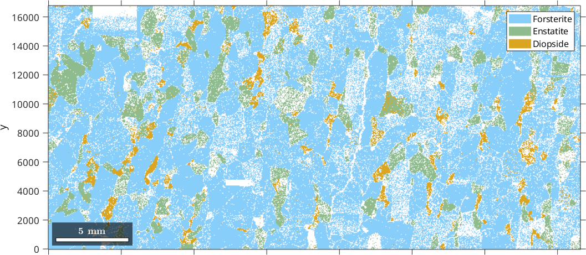
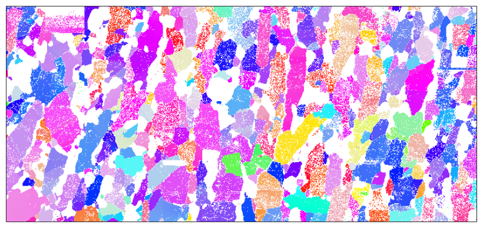
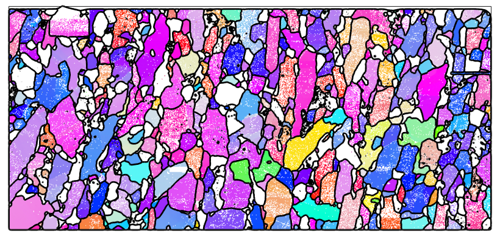
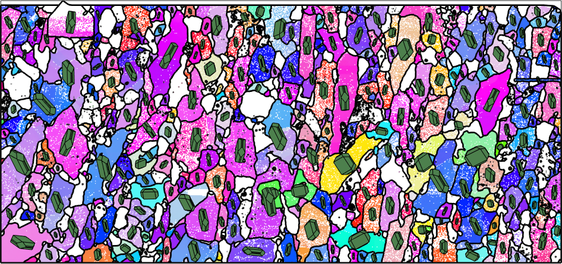
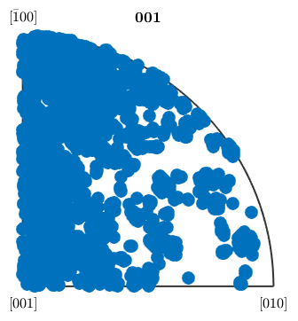

A quick guide about how to work with EBSD data in MTEX.
Data import
MTEX allows to import EBSD from all big vendors of EBSD systems. Prefered data formats are text based data files like .ang, .ctf or open binary formats like .hdf5 .h5. Most comfortably EBSD data may be imported using the import wizard, by typing
import_wizard

or by the command loadEBSD
fileName = [mtexDataPath filesep 'EBSD' filesep 'Forsterite.ctf']; ebsd = loadEBSD(fileName)
ebsd = EBSD
Phase Orientations Mineral Color Symmetry Crystal reference frame
0 58485 (24%) notIndexed
1 152345 (62%) Forsterite light blue mmm
2 26058 (11%) Enstatite light green mmm
3 9064 (3.7%) Diopside light red 12/m1 X||a*, Y||b*, Z||c
Properties: bands, bc, bs, error, mad, x, y
Scan unit : um
As a result the ebsd data are stored in a single variable, here called ebsd. This variable contains all relevant information, i.e., the spatial coordinates, the orientation information, a description of the crystal symmetries and all other parameters contained in the data file.
Phase Plots
In the present case the output shows that the data sets is a composition of three different phases Forsterite, Enstatite, and Diopside. The spatial distribution of the different phases can be visualized by the plotting command
plotx2east % this command tell MTEX to plot the x coordinate pointing towards east plot(ebsd,'coordinates','on')
When importing EBSD data a central issue is to align them correctly to a fixed reference frame. This issue is exhaustively discussed in the topic aligning EBSD data.
Orientation Plots
Analyzing orientations of an EBSD map can be done only for each phase seperately. The key syntax to restrict the data to a single phase is
ebsd('Forsterite')
ans = EBSD
Phase Orientations Mineral Color Symmetry Crystal reference frame
1 152345 (100%) Forsterite light blue mmm
Properties: bands, bc, bs, error, mad, x, y
Scan unit : um
Now we may extract all Forsterite orientations by
ebsd('Forsterite').orientations
ans = orientation size: 152345 x 1 crystal symmetry : Forsterite (mmm) specimen symmetry: 1
and may use them to plot an ipf map of all Forsterite orientations
plot(ebsd('Forsterite'),ebsd('Forsterite').orientations,'micronbar','off')
In this standard form a default color coding of the orientations is choosen. A more complete discussion about how to colorize orientations can be found in the topic orientation coloring.
Grain reconstruction
MTEX contains a sophisticates algorithm for reconstructing the grain structure from EBSD data as described in the paper Grain detection from 2d and 3d EBSD data and the topic grain reconstruction. The standard syntax is as follows
% reconstruct grains with theshold angle 10 degree grains = calcGrains(ebsd('indexed'),'theshold',10*degree) % smooth the grains to avoid the stair casing effect grains = smooth(grains,5) % plot the grain boundaries on top of the ipf map hold on plot(grains.boundary,'lineWidth',2) hold off
grains = grain2d
Phase Grains Pixels Mineral Symmetry Crystal reference frame
1 1080 152345 Forsterite mmm
2 515 26058 Enstatite mmm
3 1496 9064 Diopside 12/m1 X||a*, Y||b*, Z||c
boundary segments: 43912
triple points: 3417
Properties: GOS, meanRotation
grains = grain2d
Phase Grains Pixels Mineral Symmetry Crystal reference frame
1 1080 152345 Forsterite mmm
2 515 26058 Enstatite mmm
3 1496 9064 Diopside 12/m1 X||a*, Y||b*, Z||c
boundary segments: 43912
triple points: 3417
Properties: GOS, meanRotation

Crystal Shapes
In order to make the visualization of crystal orientations more intuitive MTEX supports crystal shapes. Those are polyhedrons computed to match the typical shape of ideal crystals. In order to overlay the EBSD map with crystal shapes orienteted accordingly to the orientations of the grains we proceed as follows.
% define the crystal shape of Forsterite and store it in the variable cS cS = crystalShape.olivine(ebsd('Forsterite').CS) % select only grains with more then 100 pixels grains = grains(grains.grainSize > 100); % plot at the positions of the Forsterite grains the crystal shapes hold on plot(grains('Forsterite'),0.7*cS,'FaceColor',[0.3 0.5 0.3]) hold off
cS = crystalShape mineral: Forsterite (mmm) vertices: 36 faces: 20
Pole Figures
One of the most important tools for analysing the orientations in an EBSD map are pole figure plots. Those answer the question into which specimen directions the following fixes crystal directions are oriented.
% the fixed crystal directions h = Miller({1,0,0},{0,1,0},{0,0,1},ebsd('Forsterite').CS) % plot their positions with respect to specimen coordinates plotPDF(ebsd('Forsterite').orientations,h,'figSize','medium')
h = Miller size: 1 x 3 mineral: Forsterite (mmm) h 1 0 0 k 0 1 0 l 0 0 1 I'm plotting 1250 random orientations out of 152345 given orientations You can specify the the number points by the option "points". The option "all" ensures that all data are plotted

Inverse Pole Figures
Analogously one can ask for the crystal directions pointing into a fixed specimen direction. This question is answered by inverse pole figures.
% the fixed specimen direction r = vector3d.Z; % plot the position of the z-Axis in crystal coordinates plotIPDF(ebsd('Forsterite').orientations,r)
I'm plotting 12500 random orientations out of 152345 given orientations